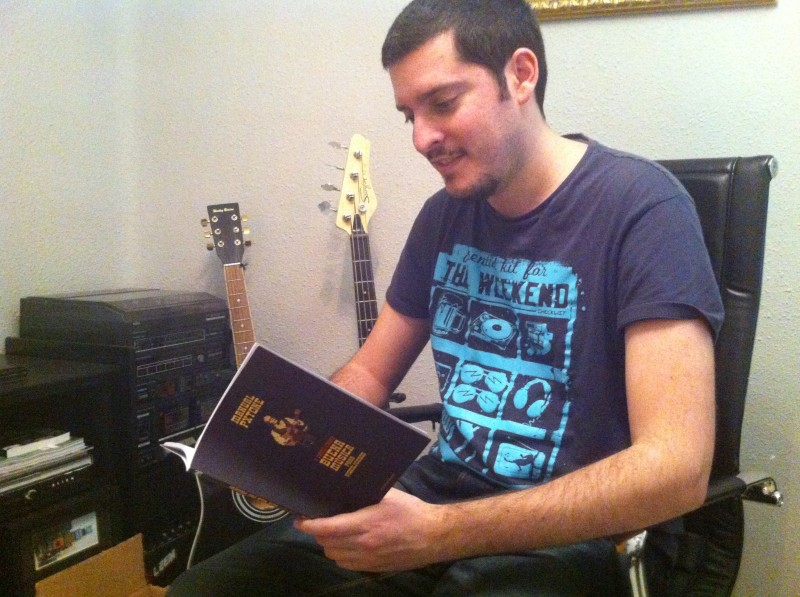
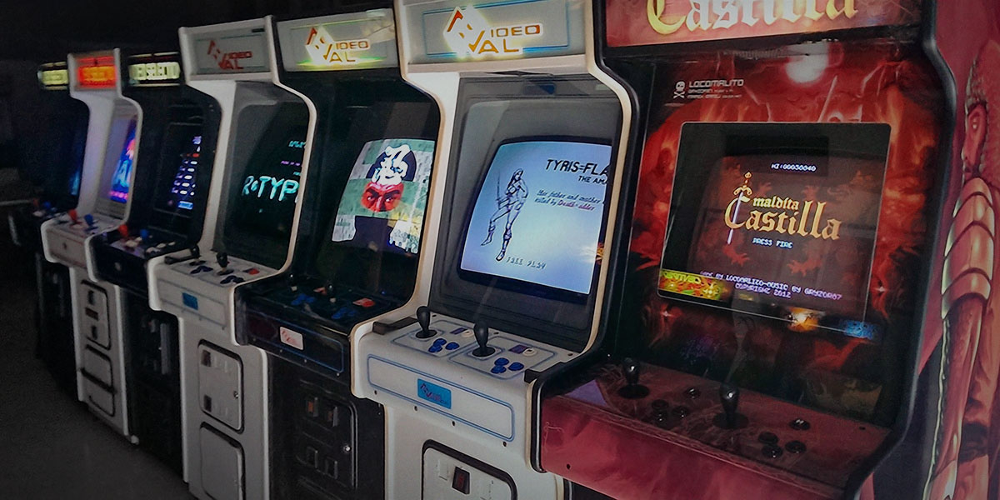
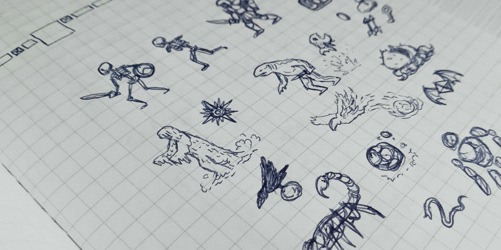
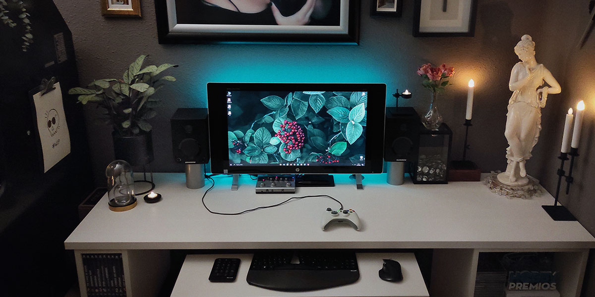
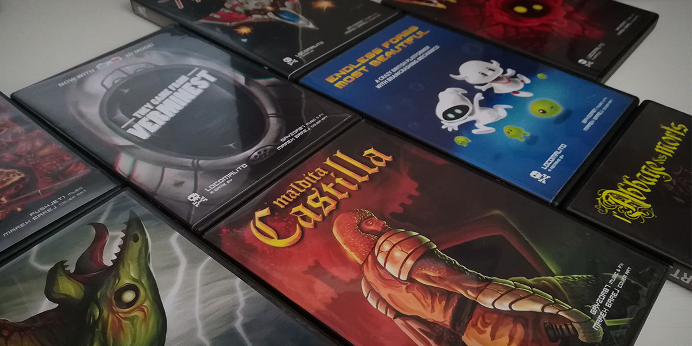

Biografía y Filosofía
Locomalito es un desarrollador independiente con sede en España, dedicado a la creación de videojuegos con un espíritu arcade clásico.
Valores de Diseño:
- Estética Retro: Pixel art cuidado y bandas sonoras inspiradas en chips de sonido antiguos.
- Dificultad Ajustada: Retos honestos que premian el aprendizaje del jugador.
- Gratuidad: Muchas de sus obras se ofrecen de forma gratuita para preservar la cultura del videojuego.
Hitos en su Trayectoria:
- Lanzamiento de Maldita Castilla, un homenaje a los mitos medievales españoles.
- Colaboraciones con Gryzor87 para bandas sonoras legendarias.
- Publicación de juegos en plataformas modernas como consolas y PC.
Cosas que adoro:
- Arcade: El concepto de juego como un reto de habilidad, la gratificación inmediata, la rejugabilidad y la honestidad de un diseño que no intenta estirar el tiempo de juego de forma artificial.
- Sistemas clásicos: Las limitaciones técnicas de las consolas y ordenadores de 8 y 16 bits, que obligaban a los desarrolladores a exprimir su ingenio y a cuidar cada píxel y cada nota musical.
- Música Chip: Las melodías compuestas para chips de sonido antiguos (como el YM2151 o el SN76489), capaces de transmitir grandes emociones con muy pocos canales de audio.
- Fantasía y serie B: El imaginario de los monstruos clásicos, la mitología, el cine de terror de presupuesto bajo y las historias de aventuras que no necesitan ser complejas para ser épicas.
- Artesanía visual: El arte de los manuales de instrucciones, las portadas ilustradas a mano y los mapas que venían en las cajas de los juegos, que expandían el universo del juego fuera de la pantalla.
- Hacer juegos por amor: El proceso de desarrollo independiente y personal, donde cada decisión se toma por convicción creativa y no por tendencias de mercado o intereses comerciales.
Influencias:
Sus juegos beben de grandes clásicos de los salones recreativos de los 80 y 90, buscando capturar la esencia de la "moneda de cinco duros".




